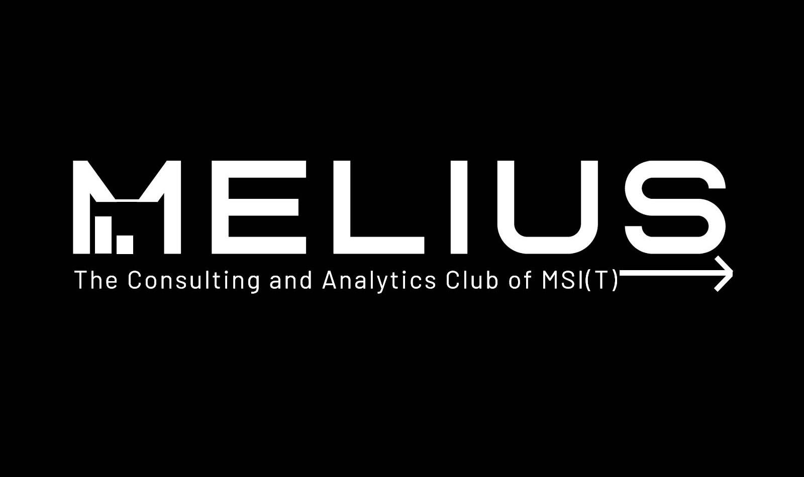

Credit Card Fraud Detection
During my ML internship at Codsoft, we embarked on the project "Detect credit card fraud with ML." This was all about guarding financial transactions like a pro wizard. Using machine learning and a combination of advanced algorithms, we developed a fraud detection system that could spot suspicious transactions with remarkable accuracy. Our solution provided enhanced security and peace of mind for both businesses and cardholders, ensuring that credit card fraud became a problem of the past.For more details, you can explore the project on my GitHub.

Twitter Sentiment Analysis
In my project, I conducted sentiment analysis on Twitter data. Utilizing Python libraries like nltk, seaborn, matplotlib, scikit-learn, and pandas, I determined sentiment, offering valuable insights into public opinion and customer feedback. The project's success was guaranteed through rigorous evaluation, using metrics like F1-score, accuracy, and precision, ensuring a practical and high-performance model. For more details, you can explore the project on my GitHub.

Spam SMS Detection
In my ML internship at Codsoft, I had the privilege of working on the project "Identify SMS spam with AI." This project was all about harnessing the power of machine learning to put an end to those unwanted spam text messages. Using AI, we crafted an intelligent solution that sorted through SMS messages and accurately identified and filtered out spam. The magic of our code enabled users to experience cleaner and more efficient communication channels, making spam texts a thing of the past.For more details, you can explore the project on my GitHub.

Exploratory Data Analysis
In this project, I analyzed a movies dataset using Python libraries like pandas for data handling, matplotlib for creating plots, and seaborn for data visualization. I began with data cleaning to ensure dataset integrity by addressing missing values and duplicates. Data visualization techniques, including line and bar plots, were then employed to extract insights like trending patterns, language distribution, and budget-revenue relationships. The project's findings and code are available on my GitHub repository, offering valuable resources for those interested in movies dataset analysis and data visualization.For more details, you can explore the project on my GitHub.

Amazon India Products 2023 Analysis
In this project, we conducted a thorough analysis of an extensive dataset containing details about Amazon products in India, encompassing product titles, prices, reviews, and categories. Our main objectives were to gain insights into product characteristics, identify trends, and extract valuable information. During the analysis, we focused on key aspects, including category distribution, price ranges, bestsellers, price vs. ratings, and price outliers. Our data analysis journey is ongoing, and we anticipate more exciting discoveries and insights as we delve deeper into this rich dataset. Stay tuned for further revelations and trends in the world of Amazon India products!.For more details, you can explore the project on my GitHub.

Melius- "The Consultant and Analytic Club"
As a part of the Melius Analytic Club project, I harnessed the power of Flask, RestApi, and Sqlalchemy to enhance development processes significantly. This effort led to a remarkable 20% improvement in code efficiency, making our workflows smoother and more efficient. Through the implementation of robust data models and Restful APIs using Sqlalchemy and Flask, we witnessed a substantial 45% increase in user interaction and engagement. The project's codebase and details can be explored on my GitHub repository, providing valuable insights for those interested in leveraging these technologies for similar purposes.For more details, you can explore the project on my GitHub.